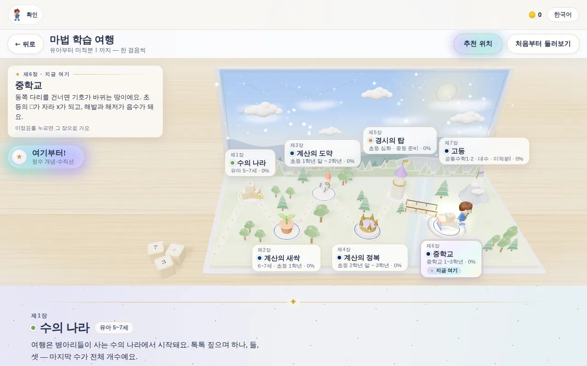
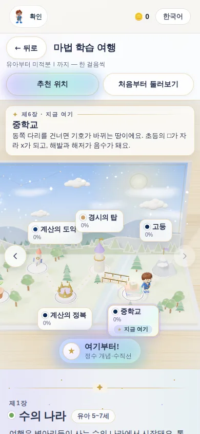
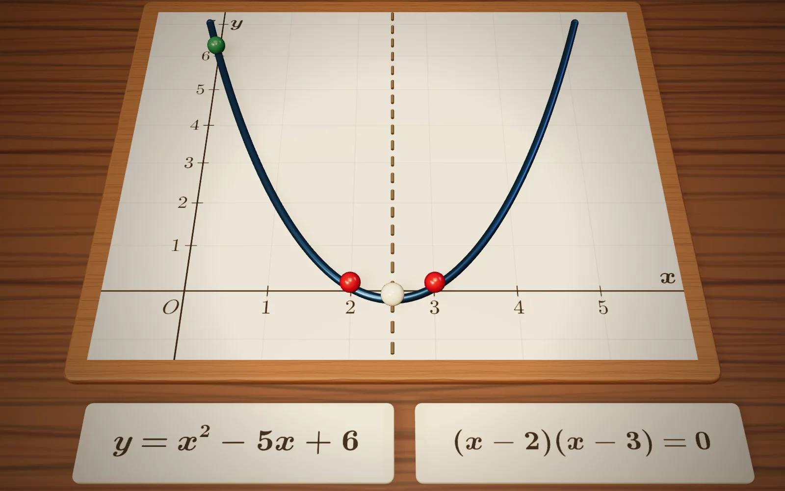
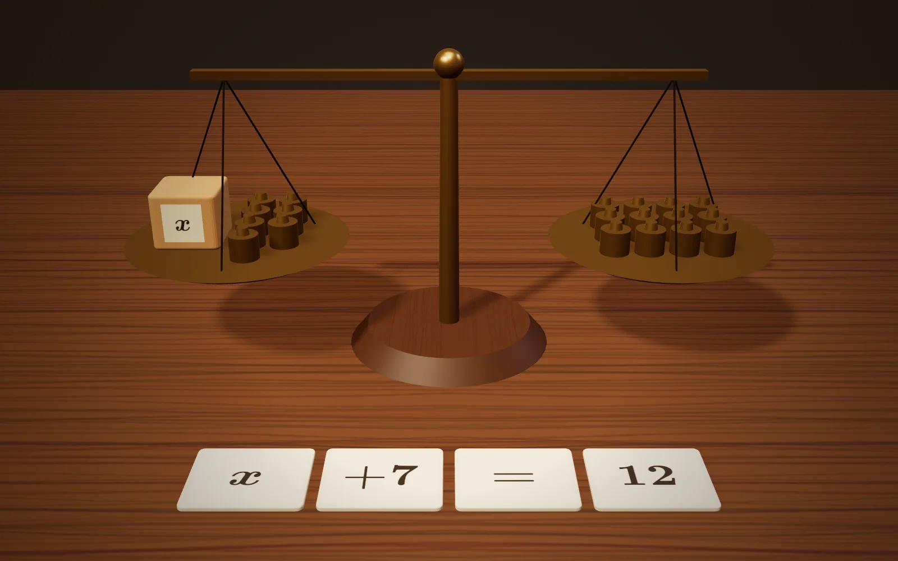
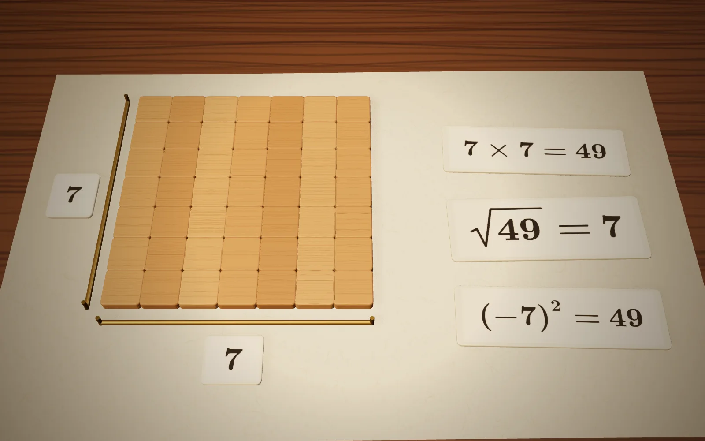
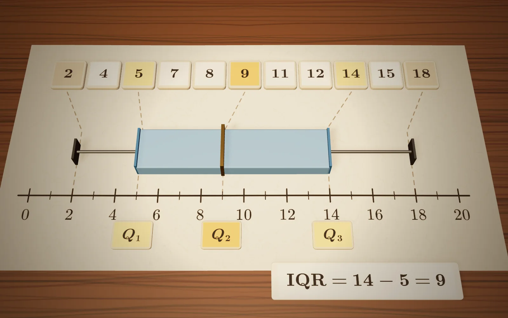
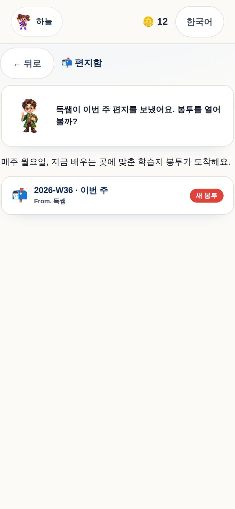

자막숫자가 마법이 되는 곳
01소개 영상
2분 10초로 보는 수의 마법
왜 빠른 계산보다 수 감각인지, 진단부터 매주 종이 학습지까지 — 가족이 겪는 순서 그대로 담았습니다. 한국어 내레이션이고, 영상 아래에 자막이 흐릅니다.
숫자가 마법이 되는 곳
수학 마법 나라에 오신 걸 환영합니다.
이곳에서 아이들은 수를 마법처럼 다루는 법을 배웁니다.
들어가기
소개 영상으로 생각을, 체험 학습지로 종이 위의 공부를, 온라인 학습 영상으로 앱 속 수업을 보시고, 궁금한 점은 오픈톡으로 편하게 물어보세요.
자막숫자가 마법이 되는 곳
01소개 영상
왜 빠른 계산보다 수 감각인지, 진단부터 매주 종이 학습지까지 — 가족이 겪는 순서 그대로 담았습니다. 한국어 내레이션이고, 영상 아래에 자막이 흐릅니다.
02체험 학습지
실제 주간 학습지 한 회차에서 여섯 쪽을 그대로 뽑아 책처럼 엮었습니다. 빼기 기호 −의 역사를 담은 수학 이야기, 매거진 지면, 누미의 마법 노트, 창의 연산, 교과 연산, 문장제 순서입니다. 정답지는 빼 두었습니다.
Numbers of Magic
체험 학습지
과정
5
뺄셈 마법과 구구단 첫걸음
로드맵 2단계 · 계산의 새싹
6~7세 · 1회차 · 6쪽
넘겨 보세요 →
03온라인 학습
'더해서 10을 찾아라' 한 단원을 처음부터 끝까지 담았습니다. 마법 노트로 짝 묶기를 배우고, 매직 랩에서 직접 짝을 고르고, 3D로 확인한 뒤 숫자 패드로 풀어 도장을 받습니다. 마지막엔 수학 실험실에서 1부터 100까지를 짝지어 5050을 구합니다. 실제 앱 화면을 소리 없이 담았습니다.
04오픈톡 상담
우리 아이는 어디서 시작하면 좋을지, 주 1회와 주 2회 중 어떤 속도가 맞을지, 학습지는 어떻게 받는지 — 무엇이든 카카오톡 오픈채팅에서 이야기 나눠요.
이 페이지는 아무것도 수집하지 않습니다 — 이름이나 연락처를 적는 칸이 없고, 대화는 카카오톡 안에서만 이어집니다.
I 제1막 · 왜
연산만 하는 학습도, 창의 연산만 하는 학습도 아닙니다. 수의 정복을 넘어 수학을 정복하려면, 수를 가지고 놀고, 문장을 이해하고, 셈을 할 수 있어야 합니다.

함수의 f에 놀라고, 허수의 i에서 수학을 놓아 버리는 일을 많은 부모님이 직접 겪으셨습니다. 기호가 바뀌는 순간이 진짜 고비입니다. 그래서 여기서는 말 → 그림 → 내 표기 → 표준 기호의 순서로 만나고, 모든 기호에 번역문을 붙입니다. + 는 "모아라", = 는 "양쪽이 같다" — 답이 나온다는 뜻이 아닙니다.
수와 기호를 읽고, 문장 속의 수를 알아듣는 힘.
왜 그런지 묻고, 길을 여러 개 찾아보는 힘.
학교 진도 그대로 필산으로 정확하게, 그리고 수를 펼쳐서 쉽게.
언어와 사고력과 연산을 골고루 연습해야,
수를 정복하고 수학을 정복합니다.
— 독쌤
II 제2막 · 어떻게
첫걸음은 진단입니다. 진단이 길을 정하고, 길이 정해지면 아이의 차례입니다. 그리고 공부는 종이에 합니다.
"아이의 연산 단계를 확인하고, 지금 속도가 어디로 이어지는지 보여 드립니다."
몇 문제로 유아부터 고등까지 어디서 시작할지 찾습니다. 틀려도 괜찮은 자리부터. 그 자리가 로드맵 위의 "지금 여기"가 되고, 지금 속도라면 세 기준 중 어디와 나란한지 보여 드립니다.
참고용 비교 · 결과를 약속하지 않습니다 · 연산 트랙 기준
그리고 상위 레벨로 가려면 무엇을 바꾸고 기간을 어떻게 줄일지, 지금의 학습 성향과 관리, 가능한 속도를 보고 설계해 드립니다. 여기 주차는 연산 트랙만 센 것이라, 사고력·교과를 함께하면 그만큼 더 걸립니다.

"주 1회, 주 2회, 속도와 양을 아이에게 맞게 정합니다."
일곱 장으로 이어진 하나의 길입니다. 어느 장에서 시작하든 다음 장이 이어지고, 레벨은 언제든 바꿀 수 있습니다. 학교 진도보다 앞선 편성이라 구구단이 이미 두 번째 장에 들어 있습니다.

아이에게는 이렇게 말합니다 — "오늘은 어느 건물로 갈까?"
아이는 자기 아바타로 마을을 걷습니다. 수의 나라 버섯집에서 시작해 초급·중급·고급 건물로, 탑으로 올라갑니다. 숫자 친구들과 독쌤, 할아버지가 곳곳에서 오늘 배울 마법을 알려 줍니다. 부모님은 앱을 열지 않으셔도 됩니다 — 학습지가 부모님 몫입니다.


"그 길은 하나의 이야기로 이어집니다."
팝업 동화책을 펼치면 일곱 장이 한 지도 위에 서 있습니다. 병아리들이 사는 수의 나라에서 시작해, 동쪽 다리를 건너면 기호가 바뀌는 중학교 땅입니다. 초등의 □가 자라 x가 되고, 해발과 해저가 음수가 됩니다. 아이가 지금 어느 장에 있는지, 다음 장이 무엇인지 그림으로 압니다.


"곱해서 10이 되는 2와 5를 먼저 묶으면, 4 곱하기 7 곱하기 5도 금방 풀립니다."
아래 판을 눌러 보십시오. 아이가 학습지에서 만나는 창의 연산 한 문제가 한 걸음씩 펼쳐집니다. 필산은 학교 진도 그대로 정확하게 다지고, 그 옆에서 같은 문제를 펼쳐 다시 만듭니다.
답은 하나지만, 길은 여러 개입니다.
"수학사와 게임을 통해 왜 그런지, 그 증명 과정까지 알게 됩니다."
공식을 외우기 전에 책상 위에 놓아 봅니다. 곱셈 공식은 타일의 넓이이고, 이차방정식의 해는 포물선이 x축을 지나는 두 점이며, 방정식은 저울입니다. 새 기호는 이미 아는 마법의 새 이름표일 뿐입니다.




51개 개념 장면. 움직이는 장면으로 왜 그런지 눈으로 확인합니다.
이 마법을 누가, 왜 만들었는지 — 수학사 퀴즈와 기호 도감으로 만납니다.
수를 체험하는 게임 모드. 증명 과정을 손으로 따라가며 놀이로 굳힙니다.
"매주 한두 번 학습지를 받거나 인쇄하고, 더 연습하고 싶으면 같은 과정을 더 풀거나 더 높은 난이도로 올라갑니다."
연산은 가정에서 매일 하는 것입니다. 그래서 저희가 드리는 것은 수업이 아니라 학습지와 진단, 계획입니다. 회차마다 개념과 예시 풀이가 앞에 있고, 필산 → 창의 연산 순서로 이어집니다. 초등 연산 구간에는 그 주에 쓸 종이 교구가 함께 인쇄됩니다.

"매주 학습지와 진도 안내는 학부모님 휴대폰으로 갑니다."
앱을 매일 열지 않으셔도 됩니다. 이번 주 학습지가 봉투로 도착하면 문자와 휴대폰으로 알려 드리고, 지금 배우는 곳과 다음 목표가 함께 갑니다.

III 제3막 · 함께
학생과 부모님과 학원이 함께 문화를 만들어야 한다는 독쌤의 철학입니다. 수와 친해지는 것은 학원에서 한 시간으로 되지 않습니다. 가정에서 매일 조금씩, 학원이 길을 보고, 아이가 걷습니다.
아바타로 마을을 걸으며 오늘의 마법을 찾고, 공부는 종이에서 합니다.
매주 휴대폰으로 오는 봉투를 인쇄하고, 함께 앉아 풀기 좋은 속도를 고릅니다.
진단으로 지금 자리를 찾고, 속도와 양을 설계하고, 매주 진도를 살핍니다.
만 5세부터 시작합니다
? 자주 묻는 질문
수를 정복해야 수학을 정복합니다
학생과 부모님과 학원이 함께 문화를 만들어야 한다는 독쌤의 철학, 넘버스 오브 매직에서 경험하십시오.